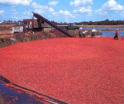

Cranberry Classics
The traditional Thanksgiving berry
Before the Europeans stepped foot on North American soil, the Native American inhabitants of the continent were well versed in the harvesting and preparation of the cranberry. The round red berries grew wild in marshes and bogs along the East Coast. Although not unknown in England, cranberries were effectively introduced to the Pilgrims by the Indians, who used them for medicine and dyes as well as food. (The early settlers called the berries "crane berries," because the white blossom and stem resembled the head and neck of a crane.)
The Indians taught the Pilgrims to crush the berries with stones, combine them with dried meat and fat drippings and form small cakes out of the mixture. These cakes, called pemmican, kept well and were eaten throughout the winter.
Americans have been devising new cranberry concoctions ever since. And in the state where the Pilgrims harvested berries growing abundantly in the wild, the fruit has evolved into a viable commercial crop. More than half of the cranberries eaten in the U.S. today are grown on Cape Cod. The berry is also an important crop in the northwestern states, New Jersey and Wisconsin.
Cranberries are grown in cooperation with nature, in a manner that our immigrant and Native American ancestors would recognize and applaud. Pesticide use is minimal; instead, geese weed the bogs and swallows harvest the unfriendly bugs. Some growers also place beehives near the bogs to promote pollination. The berries are proof that organic farming, like Thanksgiving, is a treasured part of our heritage.
Harvested in September, fresh berries are readily available throughout the country in the fall. The fruit will keep between four and eight weeks if refrigerated when bought. Like most berries, they should never be washed until just before using or they'll spoil.
One of my favorite cranberry relish recipes is a simple mixture that beautifully shows off the meaty red fruit:
1 pound bug cranberries
1 orange, pitted and sliced thin
1 can crushed pineapple (unsweetened)
1 package unflavored gelatin
1/2 cup water
Sugar (to taste)
Coarsely grind cranberries, orange slices and crushed pineapple in a kitchen grinder (a food processor can be used; take care not to overdo it: The final mixture should be a coarse blend of small bits of the ingredients, with the consistency of a thick relish. Place mixture in bowl and stir in gelatin dissolved in 1/2 cup of water.
Sweeten to taste-I use about 2/3 cup of sugar. Honey will also work, or add more oranges. (Add more gelatin if oranges are juicy.)
Here's another interesting variation on the classic cranberry relish:
2 cups sugar fructose syrup may be substituted
3/4 cup water
4 cups cranberries
1 teaspoon freshly grated nutmeg
1/2 teaspoon crushed cardamom pods
1/2 teaspoon ground allspice
In a heavy saucepan, over medium heat, dissolve sugar in water. Raise heat to medium-high and bring to a boil. Add remaining ingredients and cook for about two minutes. The cranberries should pop. Cover and refrigerate. This dish is best served at room temperature or slightly warmed.
1/4 pound margarine or butter
1 cup sugar
1 teaspoon almond flavoring
2 eggs
2 cups sifted flour
1 teaspoon baking soda
1 cup sour cream
1 cup fresh cranberries
1/2 cup chopped walnuts
Preheat oven to 350 °F, and grease a tube pan. Cream the margarine or butter with the sugar. Add the almond flavoring and the eggs, blending well. Sift the flour and baking soda together, and add 1/2 cup at a time to the margarine-egg mixture, alternating with sour cream; end with dry ingredients. Mix well.
Put half the batter in the tube pan; add cranberries. Cover with remaining batter. Swirl berries through batter with a knife. Sprinkle nuts on top. Bake for 55 minutes. When done, turn off the oven and leave for mom minutes. Remove from pan. When cool, frost with White Glaze.
1-1/2 tablespoons milk
2 teaspoon vanilla
1/2 teaspoon almond extract
1 cup confectioners' sugar
Add milk, vanilla and almond extract to confectioners' sugar. Blend until smooth.
3 cups unpeeled, sliced apples
1 cup finely chopped walnuts
1/2 cup minced celery
1/4 cup chopped raw cranberries
3/4 cup plain yogurt
2 tablespoons mild honey
1 teaspoon salt
Juice of 1/2 lemon
Lettuce or raw spinach
Combine apple slices, walnuts and celery. Stir together the cranberries, yogurt, honey, salt and lemon juice. Blend with other ingredients. Place on bed of lettuce or spinach. Serves 6.
Stephen Klein raises everything but cranberries on a farm in Zionsville, Pennsylvania.
|
 The great cranberry roundup. |
|
|